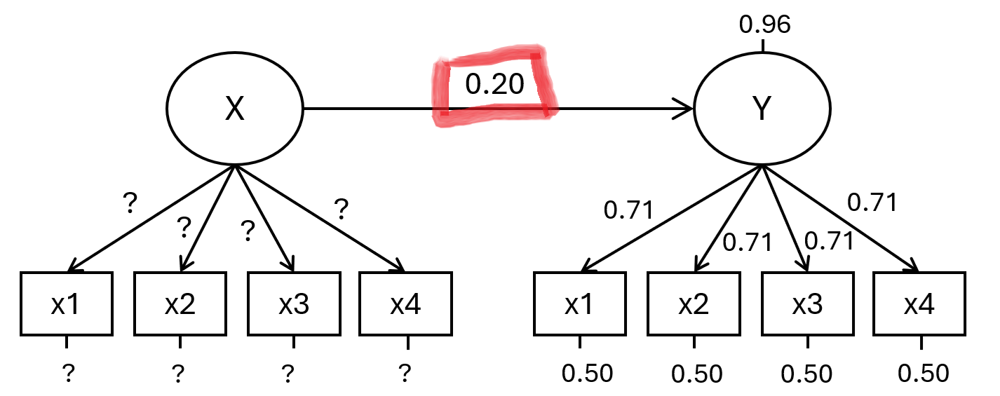
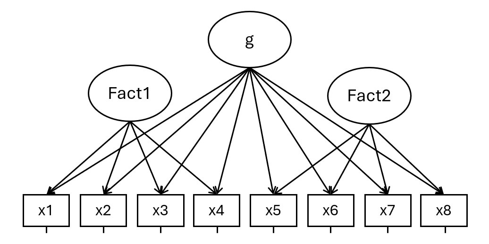

Un buon motivo per tenere d’occhio l’attendibilità è la potenza statistica nella ricerca. Se un costrutto latente è misurato usando item che presentano una maggiore consistenza interna, la potenza sarà maggiore.
Consideriamo il seguente scenario. Tutto è standardizzato. L’effetto di X su Y è 0.20. Ciò che resta da stabilire sono i loading (e i residui) di X.

Il codice seguente (clicca sulle scritte sotto per vedere) esegue una power analysis per il coefficiente di regressione evidenziato sopra in rosso. Vengono eseguite 500 iterazioni per varie combinazioni di N (tra 50 e 300) e loading standardizzato (abbiamo considerato .45, .60 e .75; questi ultimi implicano poi certe correlazioni medie tra gli item del fattore X e, di conseguenza, certi Alpha di Cronbach).
Show the code
library(ggplot2)library(parallel)library(lavaan)library(psych)# Create a data frame with the parameters for the power simulationniter =500powerSim =data.frame(expand.grid(N =rep(seq(50,300,50), each=niter), loadX =c(.45,.60,.75)))# Detect the number of cores and create a clusternum_cores <-detectCores() -1# Use all but one core to keep system responsivecl <-makeCluster(num_cores)# Export necessary libraries and data to the clusterclusterExport(cl, varlist =c("lavaan", "psych", "powerSim"))# Define the function that will perform the computation for each rowrun_simulation <-function(i) {library(lavaan) N <- powerSim$N[i] loadX <- powerSim$loadX[i] X =rnorm(N, 0, 1) x1 = loadX * X +rnorm(N, 0, 1- loadX^2) x2 = loadX * X +rnorm(N, 0, 1- loadX^2) x3 = loadX * X +rnorm(N, 0, 1- loadX^2) x4 = loadX * X +rnorm(N, 0, 1- loadX^2) Y =0.20* X +rnorm(N, 0, 1-0.20^2) y1 =0.707* Y +rnorm(N, 0, 1-0.707^2) y2 =0.707* Y +rnorm(N, 0, 1-0.707^2) y3 =0.707* Y +rnorm(N, 0, 1-0.707^2) y4 =0.707* Y +rnorm(N, 0, 1-0.707^2) df =data.frame(x1, x2, x3, x4, y1, y2, y3, y4) model =" X =~ x1+x2+x3+x4 Y =~ y1+y2+y3+y4 Y ~ X " fit =sem(model, df) su =summary(fit) pval = su$pe[su$pe$lhs =="Y"& su$pe$rhs =="X", "pvalue"]return(list(pval=pval))}# Run the parallel computation over the rows of powerSimresults <-parLapply(cl, 1:nrow(powerSim), run_simulation)# Stop the cluster after the computation is completestopCluster(cl)# Store the results in the powerSim data framepowerSim$pval <-sapply(results, function(res) res$pval)# Print the resultsprint(powerSim)powerSim$power = powerSim$pval<0.05res =aggregate(powerSim,by=list(powerSim$N,loading=powerSim$loadX),FUN=mean,na.rm=T)resfor(l inunique(res$loadX)){ X =rnorm(1e5, 0, 1) df =data.frame(x1 = l * X +rnorm(length(X), 0, 1- l^2),x2 = l * X +rnorm(length(X), 0, 1- l^2),x3 = l * X +rnorm(length(X), 0, 1- l^2),x4 = l * X +rnorm(length(X), 0, 1- l^2) ) res$Alpha[res$loadX==l] =round(psych::alpha(df)$total$raw_alpha,3)}
La seguente figura riassume i risultati dell’analisi di potenza. Come si vede chiaramente, la potenza dipende sia dall’N che dall’Alpha di Cronbach (in realtà, dai loadings del fattore X).
I veri guai iniziano qui (ma non solo per l’Alpha di Cronbach).
Il quesito se sotto gli item ci sia un solo fattore, un solo fattore con quale item residuo-correlato, più fattori, più fattori correlati, più fattori con un fattore sovraordinato, o più fattori generali e specifici assieme, è un quesito da risolvere in parte teoricamente e in parte considerando gli indici di fit. In ogni caso è un problema di misura, e abbiamo bisogno di modelli come le CFA.
Consideriamo il seguente caso:

Questo è un modello bifattoriale. È noto nello studio dell’intelligenza, ma può andare bene in tutti i casi in cui si sospetti che dietro uno stesso item si giochino sia fattori generali che fattori più specifici contemporaneamente (ed è un caso frequente!). Anche senza entrare troppo nell’aspetto teorico, vedere le cose così è utile per partizionare la varianza degli item tra varianza dovuta ad aspetti generali e varianza dovuta ad aspetti specifici.
Questa potrebbe essere una matrice di correlazione prodotta da un modello come questo:
In base a questa matrice di correlazione, e ignorando la complessa struttura fattoriale, otterremo:
L’Alpha di Cronbach di Fact1 e di Fact2 sono entrambi circa 0.78
L’Alpha di Cronbach della scala totale sarà 0.838
Ma hanno senso questi numeri? NO. Qui davvero l’Alpha di Cronbach NON ci serve più. Ma qui il problema diventa pure più “teorico”.
Quello che vogliamo sapere è quanto le stime fattoriali ottenute partizionando le varianze degli item nei vari fattori siano attendibili. Questo ha ovviamente conseguenze anche per la potenza statistica nel caso in cui g, Fact1, e Fact2 vengano usati in un SEM, ad esempio come predittori di un certo outcome.
Questo può essere un modo sensato di procedere (ma… aiutatemi):
Computo l’attendibilità usando il pacchetto semTools:
library(semTools)compRelSEM(fit)
g Fact1 Fact2
0.719 0.223 0.237
reliability(fit)
g Fact1 Fact2
alpha 0.8442669 0.7987520 0.7804451
omega 0.8427671 0.5267341 0.5204891
omega2 0.7186147 0.2226793 0.2372585
omega3 0.7185828 0.2226897 0.2372580
avevar NA NA NA
(in verità non sono del tutto sicuro: comRelSEM sembra dare spesso stime a casaccio anche con N grandi, e in ogni caso i modelli bifattoriali spesso fanno fatica a convergere)